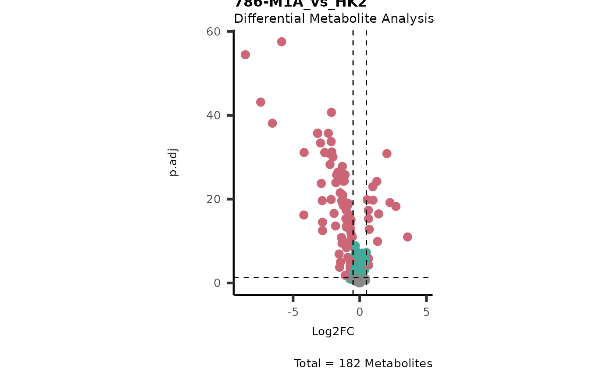

Usage
MCA_2Cond(
InputData_C1,
InputData_C2,
SettingsInfo_C1 = c(ValueCol = "Log2FC", StatCol = "p.adj", StatCutoff = 0.05,
ValueCutoff = 1),
SettingsInfo_C2 = c(ValueCol = "Log2FC", StatCol = "p.adj", StatCutoff = 0.05,
ValueCutoff = 1),
FeatureID = "Metabolite",
SaveAs_Table = "csv",
BackgroundMethod = "C1&C2",
FolderPath = NULL
)Arguments
- InputData_C1
DF for your data (results from e.g. DMA) containing metabolites in rows with corresponding Log2FC and stat (p-value, p.adjusted) value columns.
- InputData_C2
DF for your data (results from e.g. DMA) containing metabolites in rows with corresponding Log2FC and stat (p-value, p.adjusted) value columns.
- SettingsInfo_C1
Optional: Pass ColumnNames and Cutoffs for condition 1 including the value column (e.g. Log2FC, Log2Diff, t.val, etc) and the stats column (e.g. p.adj, p.val). This must include: c(ValueCol=ColumnName_InputData_C1,StatCol=ColumnName_InputData_C1, StatCutoff= NumericValue, ValueCutoff=NumericValue) Default=c(ValueCol="Log2FC",StatCol="p.adj", StatCutoff= 0.05, ValueCutoff=1)
- SettingsInfo_C2
Optional: Pass ColumnNames and Cutoffs for condition 2 includingthe value column (e.g. Log2FC, Log2Diff, t.val, etc) and the stats column (e.g. p.adj, p.val). This must include: c(ValueCol=ColumnName_InputData_C2,StatCol=ColumnName_InputData_C2, StatCutoff= NumericValue, ValueCutoff=NumericValue)Default=c(ValueCol="Log2FC",StatCol="p.adj", StatCutoff= 0.05, ValueCutoff=1)
- FeatureID
Optional: Column name of Column including the Metabolite identifiers. This MUST BE THE SAME in each of your Input files. Default="Metabolite"
- SaveAs_Table
Optional: File types for the analysis results are: "csv", "xlsx", "txt" Default = "csv"
- BackgroundMethod
Optional: Background method C1|C2, C1&C2, C2, C1 or * Default="C1&C2"
- FolderPath
Optional: Path to the folder the results should be saved at. Default = NULL
Value
List of two DFs: 1. Summary of the cluster count and 2. the detailed information of each metabolites in the clusters.
Examples
Intra <- MetaProViz::ToyData("IntraCells_Raw")
Input <- MetaProViz::DMA(InputData=Intra[-c(49:58) ,-c(1:3)], SettingsFile_Sample=Intra[-c(49:58) , c(1:3)], SettingsInfo = c(Conditions = "Conditions", Numerator = NULL, Denominator = "HK2"))
#> In `Numerator` 786-O, 786-M1A, 786-M2A, NA/0 values exist in 5 Metabolite(s). and in `denominator`HK2 2 Metabolite(s).. Those metabolite(s) might return p.val= NA, p.adj.= NA, t.val= NA. The Log2FC = Inf, if all replicates are 0/NA.
#> There are NA's/0s in the data. This can impact the output of the SHapiro-Wilk test for all metabolites that include NAs/0s.
#> Error occurred during Shapiro that performs the Shapiro-Wilk test. Message: all 'x' values are identical
#> For 32.97% of metabolites the group variances are equal.
#> No condition was specified as numerator and HK2 was selected as a denominator. Performing multiple testing `all-vs-one` using lmFit.
#> Warning: Partial NA coefficients for 1 probe(s)

Res <- MetaProViz::MCA_2Cond(InputData_C1 = Input[["DMA"]][["786-O_vs_HK2"]],
InputData_C2 = Input[["DMA"]][["786-M1A_vs_HK2"]])
#> Warning: InputData_C1 includes NAs in Log2FC and/or in p.adj. 1 metabolites containing NAs are removed.
#> Warning: InputData_C2 includes NAs in Log2FC and/or inp.adj. 1 metabolites containing NAs are removed.